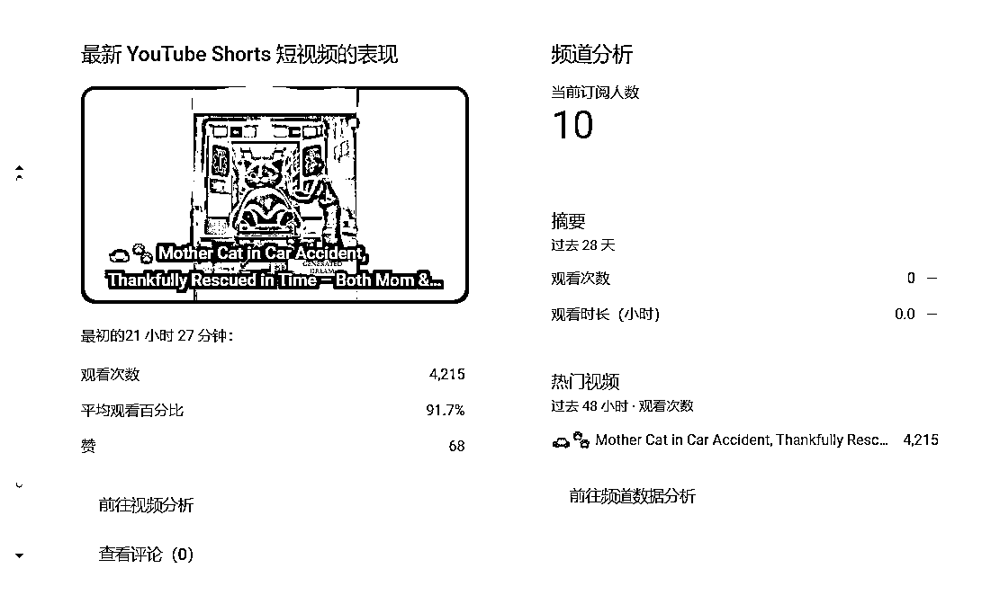
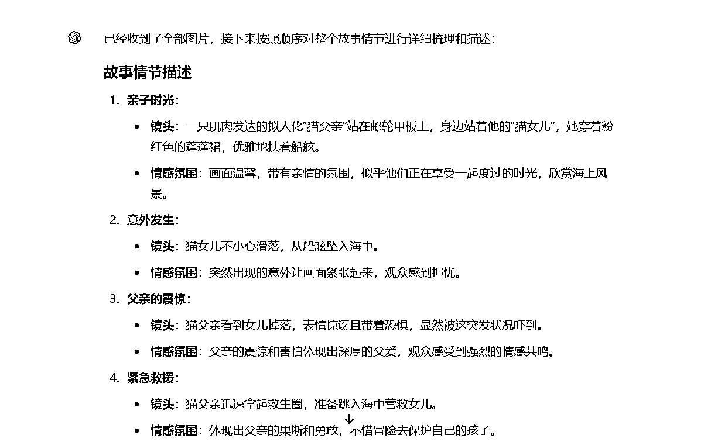
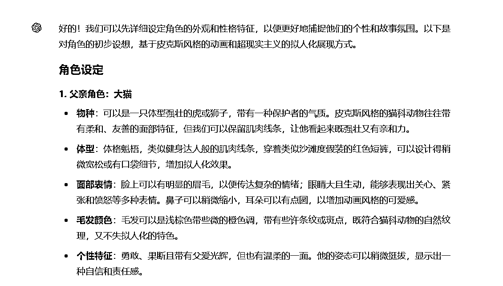
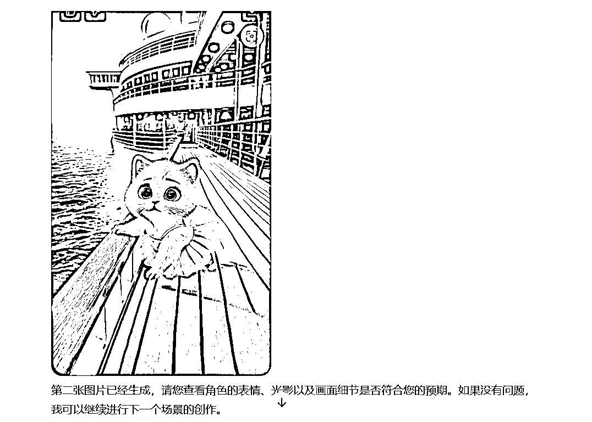
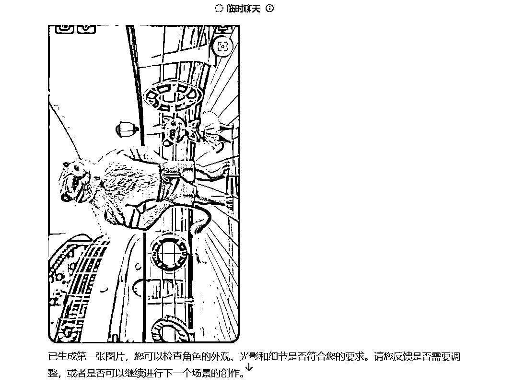
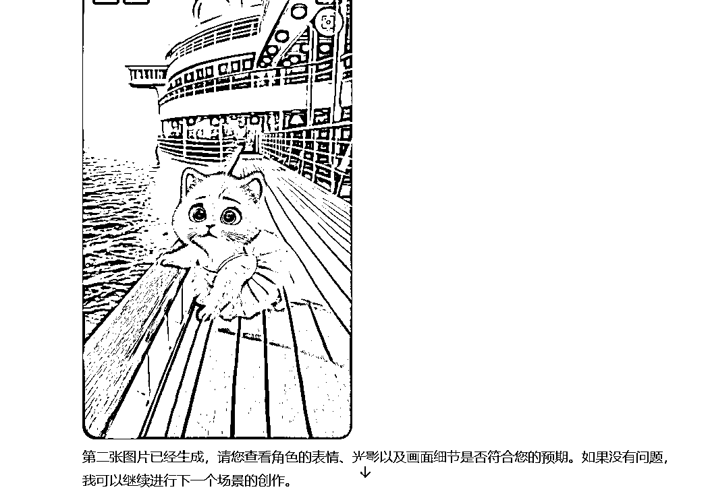

来源：https://jye96fr7e2.feishu.cn/docx/GLwcd0V4hofAwfxbzM3crKPwn7c
大家好，我是十七，今天继续给大家分享我在shorts项目上的经验，这次是一个完整的流程，因为已经l结合各位大佬的经验分享，生成视频并发布了。
作为一个小白，自己研究的进度始终是比不上各位经验丰富的大佬，遇到了非常多的卡点。幸好生财的各位大佬分享了不少最新的经验，既然研究能力比不上大佬，那就只能拼拼实操能力。
先展示一下成果：（左边原视频，右边是复刻视频）
第一条视频的数据：

定好赛道，才能有针对性地进行内容创作，作为新人最快地跑通流程，赚到第一块钱是最重要的。
最开始的时候，是自己手动刷，关键词搜索，但是这样效率太慢，凭感觉也不太准确。直到钱塘江鲤大佬的文章：1万个YouTube AI shorts 对标账号。
这篇文章是给了很大的帮助，虽然说过程看得不是很明白，但是给出的结果却很有帮助。
经过对内容的分析，最终我选择了关键词：cat
在这个关键词下，我找到三个对标账号，经过分析这个赛道是可以进行复刻的。
主要的原因有以下几个：
在分析了对标账号的视频之后，发现整体的创作过程很简单：
找到一个故事剧本→按照场景拆分生图→图生视频→视频剪辑
如果是自己原创的话，效率太慢，最终选择前期还是直接复刻，所以我的工作流程就变成了：
下载视频→按分镜截图→图生图→图生视频
如何下载视频，之前已经分享过了，思路可以参考一下之前我写的这个文章：编程小白如何用AI实现在大佬眼中轻而易举的功能
我也会在文章的最后把我写的脚本分享给大家。
视频下载好之后，也是用脚本自动把视频分割成图片，这个方法是参考这篇文章的：Shorts 爆款AI 视频，一键复刻
在这个环节，用的是用的是老马这篇文章的方法：详细拆解两个适合新人的AI Shorts 赛道。
在这篇文章中，老马介绍的用gpt生图的方法，解决了困扰我很久的两个问题：
因为工作原因，平时带在身边的是一台四五年前买的游戏本，显卡是1650的，完全没办法本地部署来出图，这段时间用的都是端脑云，在线绘图平台，而且还都是免费的。
这些平台最大的问题，是需要排队，而且出图需要审核，审核的时间也挺长，所以说用着并不好用。
其次是我选择画图的工具是comfyui（上来就选了一个最难的!）。
这个工具对我来说学习成本太高，折腾了一个星期，都是只能勉强出图，完全没有办法解决人物前后不一致这个问题。
看了老马的文章简直是及时雨，我都想要放弃等航海了。跟着老马的步骤，终于是实现了图生图的这个步骤。
在这个过程中，也自己完善了一下老马给的流程和提示词，省略了一些对话，节省了调用的次数（考虑成本）。修改之后的流程分为三步：
上传图片给GPT，让它帮我们总结场景，经验不足的时候，自己划分的可能没有GPT的准确。

这里要提前把故事中的角色先固定下来，这是为了保证角色的前后一致性。

我把老马流程中角色测试的步骤省略了，经过测试，只要在角色设定的步骤修改好之后，生成的人物基本上满足要求的。
同时我修改了提示词优化反馈的部分，给的限定条件已经足够了，优化之后出的图是比较满意的。

以下是具体的提示词：
现在我要让你重新作图，角色要重新设定，首先我需要告知的是，风格是皮克斯的动画风格，超现实主义，这些动物是属于拟人化的展现形式，所以它不需要之前的生物习惯，比如爬行，而是像人类一样行走。现在不要做图，我们先来聊一聊，这角色的设定，长什么样子，然后再优化提示词的部分
为了我们能够画出比之前更优质的图片，这是你需要遵守的一些规则：
按照这个提示词，是能够比较好的生成图片，而且人物前后保持得也还可以，但是对于不满意的部分，还是要跟GPT交互让它修改的。
PS：
我标黄的提示词是可选的，是因为GPT默认生成的图是1:1的，这样在剪辑的时候要上下加虚化，我感觉观感不是很好，就想要生成9:16的。但是它生成的都是横向的构图，即使是加了一些限定方向的提示词，它依然时好时坏，这个问题我现在还没有办法解决，希望看到的大佬可以解答一下。（下图左边的就是没有正常生成，右边就是我希望的效果）
大家觉得1:1的尺寸无所谓的话，可以把提示词中关于尺寸的部分删掉。


这个环节，我用的是海螺ai（因为新人注册，送了一天的会员）
过程很简单，上传图片，简单地写点提示词就行了，就不展开讲了。
我觉得海螺生成的效果还可以，但是只有开年度会员才能畅享生成（666/月，也很贵），月度会员68，一个月只能生成130个片段，按照一个视频10个片段算，一个视频的成本高达5块。
视频剪辑这个阶段就很简单了，把生成的视频按顺序放进剪映，加音乐、加专场、调整长度然后导出就完了。
整个分享没有很详细的步骤，因为很多步骤都是参考的各位大佬的，我觉得真的有需要的朋友，会去认真研究他们的内容的。
做这个分享，一是给自己做个复盘，同时也想鼓励一下跟我一样的朋友，即使我们在技术和经验上比不上大佬，也可以做项目，发挥自己的行动力，把大佬分享的经验拿来用，只要是跑通项目，不一定要自己研究出来的才算成功。
我相信大佬们也是希望自己的分享能够帮到更多的圈友。
以下是用到的脚本：（原本的脚本下载不了，放网盘了需要自取吧）
链接：https://pan.quark.cn/s/130d78f689eb
提取码：escQ